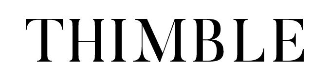

I was tasked with the brand identity of a fashion startup that paired designers with customers looking for customized clothing. The founder hadn't concepted much in the realm of visual identity: so my first step was cut out for me. I mocked up a few initial "looks" to give the client a look of how
layout, font, and color would look together, and even helped with slogans.


In general, I wanted the site to appear as neutral as possible across everything from fonts, colors, even density of content. (Our sites need to seem welcoming to women/POC; it's hard enough for them to get into tech!)
For colors, I went with a bright yellow, accented with black, grey, and blue.
Horizons offered a multi-faceted experience for its students, from the actual coding to the community, so I played with the concept of a "spinner" that showcased all four selling-points right off the bat. When a user clicks on the
verb, they're directed to its respective page.